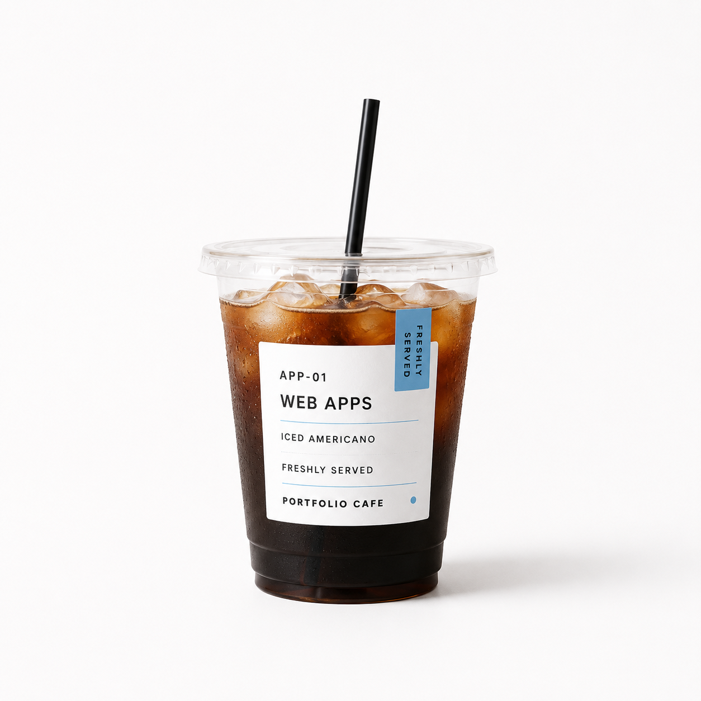
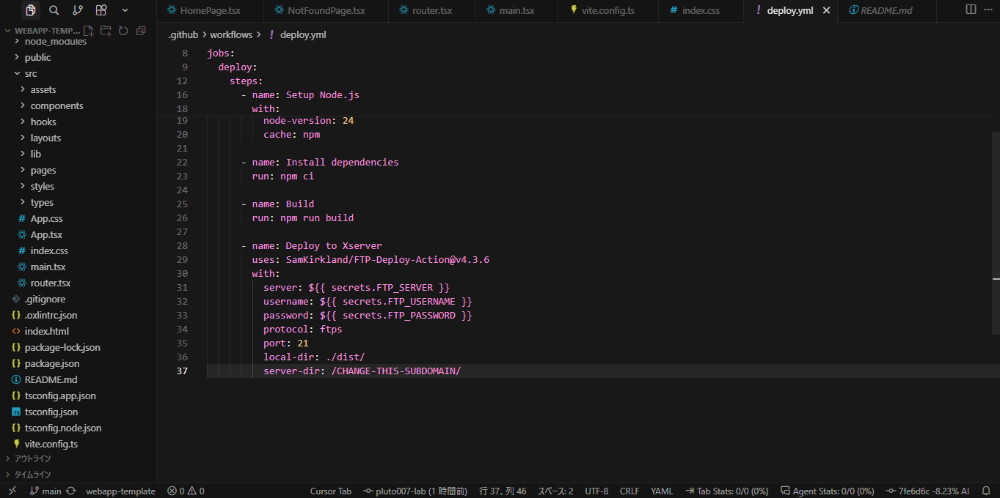

CATEGORY / APP-01
WEB APPS
困りごとや面倒を、
使える仕組みに変える。
就職活動や勤務管理など、日常の管理に困る人へ向けて、情報を見つけやすく整理したWebアプリを紹介します。
PRODUCT CATEGORY / DRINKS

APP-01FRESHLY SERVED
PROBLEM / 01
どんな課題
企業情報、応募状況、提出期限、面接予定が複数の場所へ分散し、次に行うことが分かりづらくなる課題があります。
FOR / 02
誰向け
複数企業へ応募し、企業情報と選考予定を並行して管理する就職活動中の人を想定しています。
SOLUTION / 03
何を解決したか
企業情報・応募状況・面接準備を一元管理し、今確認すべき企業と次の行動を見つけやすくしました。

FEATURES / 01
主な機能
- 企業情報管理
- 応募状況管理
- 面接予定・面接対策
- 企業評価
- LocalStorageによるローカル保存
- 実際の利用を通した継続的な機能改善
DESIGN & ENGINEERING / 02
工夫した点
- 応募状態を基準に一覧・検索・絞り込みを共通管理
- 評価理由が分かるルールベースの企業評価
- 既存データを壊さない後方互換性への配慮
- JSONバックアップ・復元とインポート前検証
- PC・タブレット・スマートフォンへの対応
FEATURED ITEM / ENDCONTINUE TO MENU
TYPE / REACT APPLICATION
勤務シフト管理アプリ

看護師向けの勤務シフト管理アプリです。有休・夏季休暇の管理や勤務ルールの確認を行えるよう設計しました。
- 有休・夏季休暇の管理
- 勤務ルールの確認
- 勤務情報の整理
TECH / React / Tailwind CSS / Vite / Gemini API
TYPE / MANAGEMENT TOOL
Design Works Admin
JSONEDITEXPORT
Designページの作品データを読み込み、作品追加・タグ・公開状態・代表作品・並び順を画面上で管理し、JSONとして書き出すツールです。
TECH / HTML / CSS / JavaScript / JSON / File API

新しいWebアプリを素早く立ち上げるための共通開発基盤です。
TECH / React / TypeScript / Vite / React Router / Tailwind CSS v4
- 01
情報を見つけやすく整理する
- 02
自分が実際に困ったことから考える
- 03
小さく作って改善する
- 04
保存・操作の分かりやすさを重視する
- 05
AIは設計・検証・改善の補助として使う